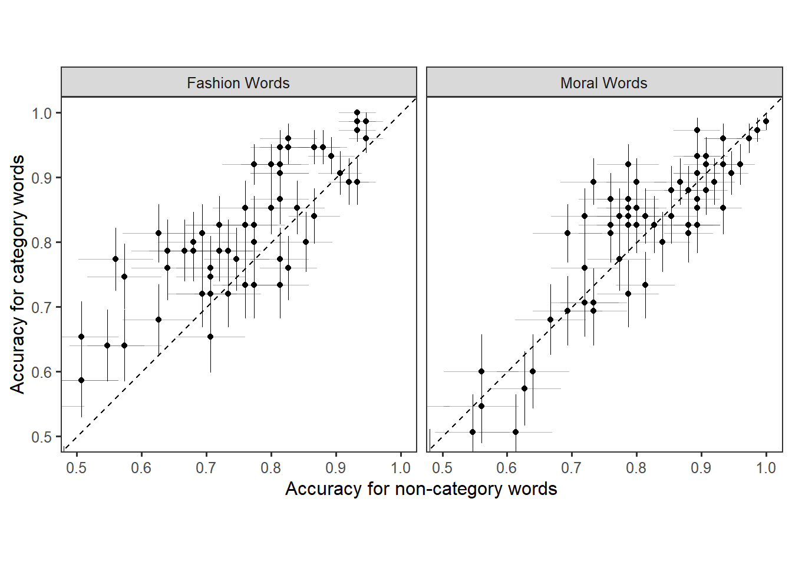

Replication of Gantman et al. 2024
Introduction
This is a replication of the study by Gantman et al. (2020). Replications are important for reasons.
Methods
Participants
42 subjects participated in the study. After applying the exclusion criteria, 34 subjects remain. 7 subjects were excluded for receiving fashion words twice due to a technical error, 1 subjects were excluded for having poor EEG recordings, 0 subjects were excluded for having a non-response rate greater than 50%, and 0 subjects were excluded for having a non-word response rate greater than 90%.
Results
Behavioral
We found a pop-out effect fashion words, but not moral words.
In the moral condition, participants were 92.75% accurate for moral words and 91.65% accurate for non-moral words. This difference was not statistically significant in the GEE model, \(\beta\) = -0.153, SE = 0.093, z = -1.652, p = 0.09854433.
In the fashion condition, participants were 92.9% accurate for fashion words and 88.35% accurate for non-fashion words. This difference was statistically significant in the GEE model, \(\beta\) = -0.5454404, SE = 0.117, z = -4.674, p = 0.000002957336.
EEG

Words vs. Non-Words
Following Gantman and Van Bavel, we looked for word vs. non-word ERP effects at each time window at electrode Pz.
In the moral condition, words elicited a more positive ERP in the P2 window (\(\beta\) = 1.704, SE = 0.303, z = 5.629, p = 0.00000001811532), N2 window (\(\beta\) = 2.094, SE = 0.391, z = 5.357, p = 0.00000008461554), and P3 window (\(\beta\) = 2.805, SE = 0.451, z = 6.222, p = 0.0000000004899925). There was no significant effect in the LPP window (\(\beta\) = 0.04, SE = 0.426, z = 0.093, p = 0.9261054).
In the fashion condition, words elicited a more positive ERP only in the P2 window (\(\beta\) = 0.709, SE = 0.321, z = 2.209, p = 0.02717636). There was no significant difference in the N2 window (\(\beta\) = 0.673, SE = 0.481, z = 1.4, p = 0.161565), P3 window (\(\beta\) = 0.887, SE = 0.675, z = 1.314, p = 0.188715), and LPP window (\(\beta\) = -0.909, SE = 0.688, z = -1.321, p = 0.1863666).
Pop-out effects
Also following Gantman and Van Bavel, we looked for ERP differences related to the category vs. non-category distinction in all four time windows at electrode Cz.
In the moral condition, there was a significant difference between moral and non-moral words in the P2 window (\(\beta\) = 0.895, SE = 0.338, z = 2.644, p = 0.008201989) and the LPP window (\(\beta\) = 1.193, SE = 0.545, z = 2.19, p = 0.02854453). However, in both of these cases the effect was in the opposite direction as the original, with non-moral words having a more positive ERP. There was no significant difference between moral and non-moral words in the N2 window (\(\beta\) = 0.234, SE = 0.376, z = 0.624, p = 0.5328386) and P3 window (\(\beta\) = 0.217, SE = 0.575, z = 0.377, p = 0.7063435).
In the fashion condition, there fashion words elicited a more positive ERP than non-fashion words in the P3 window (\(\beta\) = -2.085, SE = 0.62, z = -3.365, p = 0.0007658692). There was no significant difference in the P2 window, (\(\beta\) = 0.488, SE = 0.529, z = 0.923, p = 0.3559822), N2 window (\(\beta\) = -0.077, SE = 0.541, z = -0.142, p = 0.8871014), and LPP window (\(\beta\) = -1.656, SE = 0.959, z = -1.726, p = 0.08439177).